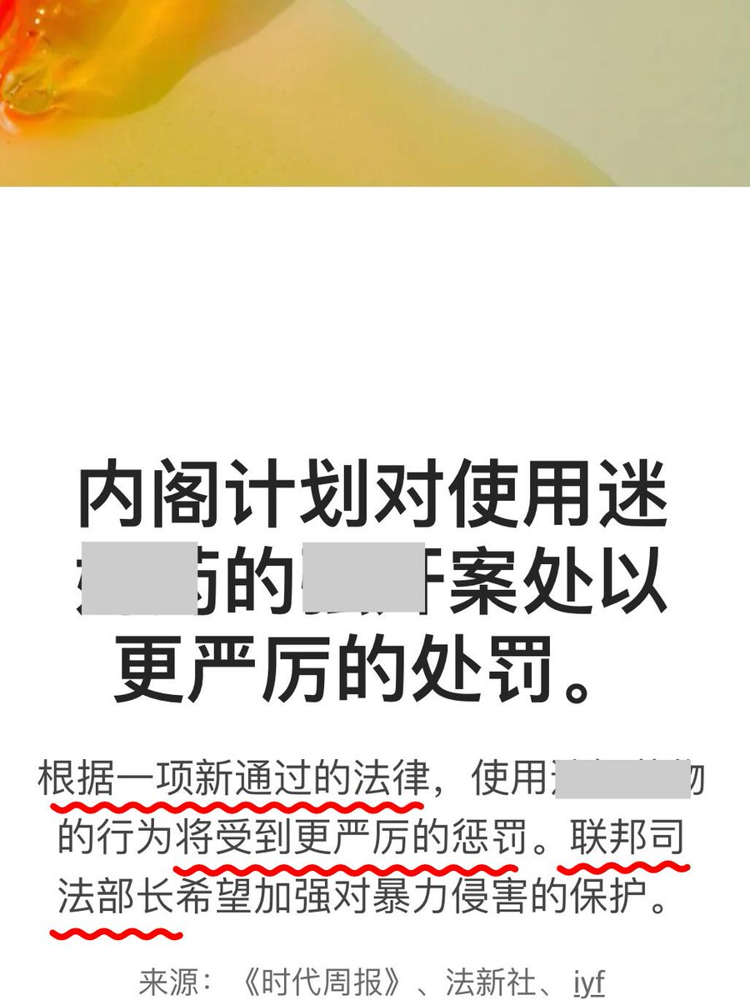

@whyyoutouzhele 此次结果的取得，充分彰显了我国在处理相关事务上的主动权与坚定立场。这也暴露出德国在法治建设与规则运行层面尚存明显的短板与漏洞。我方此举，恰恰从客观上为德方补齐制度短板、完善法治建设起到了重要的警示与启发作用，足见我方治理体系与治理能力的应对效能


“在德中国留学生迷奸案 推动 德国立法”
据多个外媒联合报道，“在德中国留学生邵之霆迷奸案”开庭之际，德国联邦内阁又通过了一项法律草案。
法案加重对使用“迷奸药”实施强奸罪的处罚，将 相关罪行的最低刑期 将从 现行的3年 提高 至5年。 https://t.co/sXVMUHQESR https://t.co/vG6IaA0Tp2
据多个外媒联合报道，“在德中国留学生邵之霆迷奸案”开庭之际，德国联邦内阁又通过了一项法律草案。
法案加重对使用“迷奸药”实施强奸罪的处罚，将 相关罪行的最低刑期 将从 现行的3年 提高 至5年。 https://t.co/sXVMUHQESR https://t.co/vG6IaA0Tp2